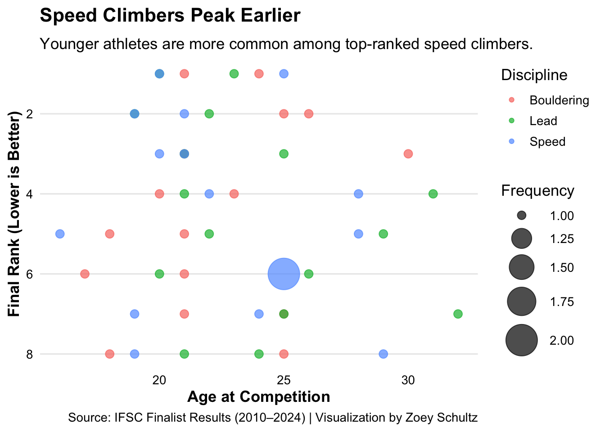
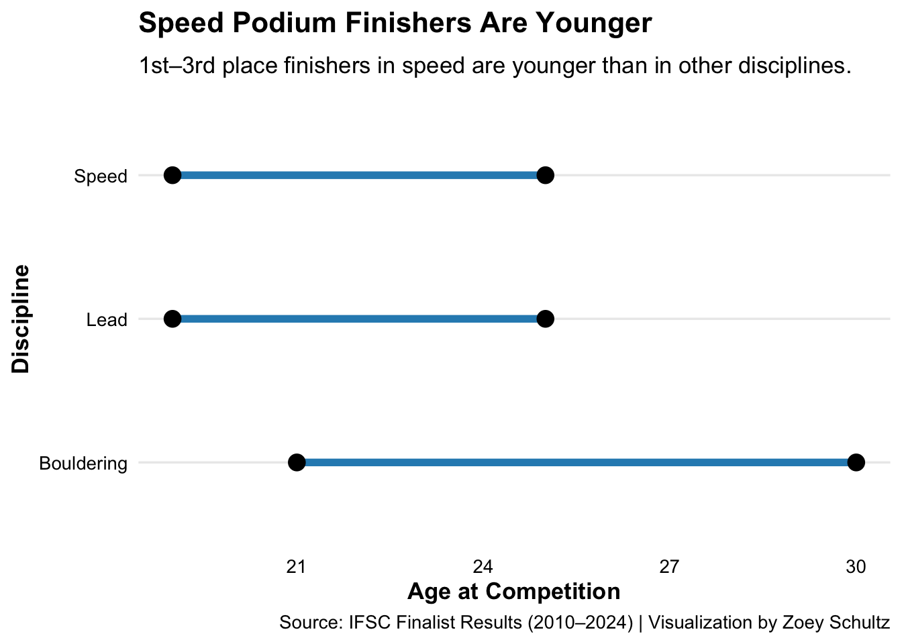
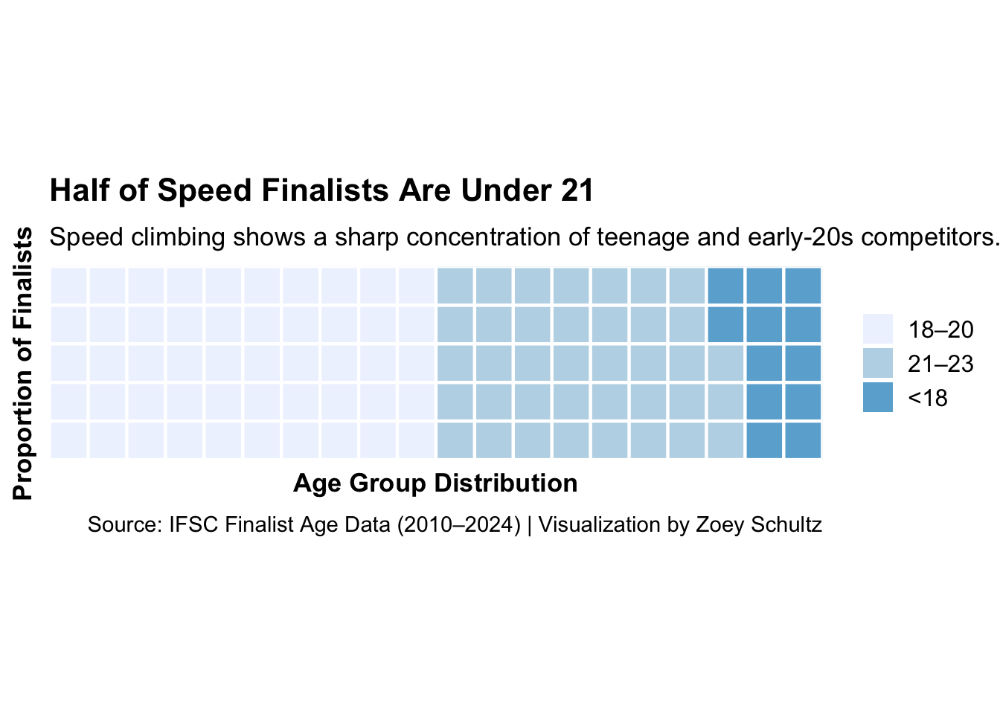

Are speed climbers peaking younger than their bouldering or lead counterparts?
I am exploring whether speed climbers peak younger than bouldering or lead climbers to understand how age influences success across climbing disciplines. The physical and mental demands of each style may shape when athletes reach their prime, and that has big implications for training, team selection, and the future of the sport.
Code
ifsc <-read_csv("data/ifsc_finalists_full_with_ages.csv", show_col_types =FALSE)bubble_data <- ifsc |>count(discipline, age_at_competition, rank)chart1 <-ggplot(bubble_data, aes(x = age_at_competition, y = rank, size = n, color = discipline)) +geom_point(alpha =0.7) +scale_y_reverse() +scale_size(range =c(3, 12)) +labs(title ="Speed Climbers Peak Earlier",subtitle ="Younger athletes are more common among top-ranked speed climbers.",x ="Age at Competition",y ="Final Rank (Lower is Better)",size ="Frequency",color ="Discipline",caption ="Source: IFSC Finalist Results (2010–2024) | Visualization by Zoey Schultz" ) +theme_minimal(base_size =13) +theme(plot.title =element_text(face ="bold", size =16, margin =margin(b =10)),axis.title =element_text(face ="bold"),axis.text =element_text(color ="black"),panel.grid.minor =element_blank(),panel.grid.major.x =element_blank() )ggsave("images/chart1.png", chart1, width =8, height =5)chart1

Speed climbing’s youth movement is hard to miss. This bubble chart reveals how younger athletes dominate the top ranks in speed, with the biggest bubbles clustering around ages 17 to 21. In contrast, top finishes in lead and bouldering are more spread out and tend to involve older competitors. The takeaway here is that speed rewards fast-twitch power and reaction time, traits that often peak earlier in life, while lead and bouldering may favor experience and endurance.
Code
podium <- ifsc |>filter(rank %in%1:3) |>group_by(discipline) |>summarise(min_age =min(age_at_competition), max_age =max(age_at_competition), .groups ="drop")chart2 <-ggplot(podium, aes(x = min_age, xend = max_age, y = discipline)) +geom_segment(aes(xend = max_age, yend = discipline), color ="#2b8cbe", size =2) +geom_point(aes(x = min_age), color ="black", size =4) +geom_point(aes(x = max_age), color ="black", size =4) +labs(title ="Speed Podium Finishers Are Younger",subtitle ="1st–3rd place finishers in speed are younger than in other disciplines.",x ="Age at Competition",y ="Discipline",caption ="Source: IFSC Finalist Results (2010–2024) | Visualization by Zoey Schultz" ) +theme_minimal(base_size =13) +theme(plot.title =element_text(face ="bold", size =16, margin =margin(b =10)),axis.title =element_text(face ="bold"),axis.text =element_text(color ="black"),panel.grid.minor =element_blank(),panel.grid.major.x =element_blank() )ggsave("images/chart2.png", chart2, width =8, height =5)chart2

When it comes to the podium, speed climbers are not only younger, they’re consistently younger. This dumbbell chart compares the age ranges of 1st to 3rd place finishers across disciplines. Speed has the tightest spread and the youngest athletes at both ends. Lead and bouldering, by comparison, show wider age gaps and older champions. The chart reinforces the idea that climbing’s disciplines demand different skillsets and hit different athletic timelines.
Code
ages <-read_csv("data/ifsc_finalists_ages.csv", show_col_types =FALSE)ages_binned <- ages |>mutate(age_group =case_when( age <18~"<18", age <21~"18–20", age <24~"21–23", age <27~"24–26",TRUE~"27+" )) |>count(discipline, age_group) |>group_by(discipline) |>mutate(percent =round(n /sum(n) *100)) |>ungroup()waffle_data <- ages_binned |>filter(discipline =="Speed") |>select(age_group, percent) |>deframe()chart3 <- waffle::waffle(parts = waffle_data,rows =5,size =0.75,colors = RColorBrewer::brewer.pal(5, "Blues"),title ="Half of Speed Finalists Are Under 21") +labs(subtitle ="Speed climbing shows a sharp concentration of teenage and early-20s competitors.",x ="Age Group Distribution",y ="Proportion of Finalists",caption ="Source: IFSC Finalist Age Data (2010–2024) | Visualization by Zoey Schultz" ) +theme_minimal(base_size =13) +theme(plot.title =element_text(face ="bold", size =16, margin =margin(b =10)),plot.subtitle =element_text(size =13, margin =margin(b =8)),plot.caption =element_text(size =11, margin =margin(t =10)),axis.text =element_blank(),axis.title =element_text(face ="bold"),panel.grid =element_blank(),legend.title =element_blank(),legend.text =element_text(size =12) )ggsave("images/chart3.png", chart3, width =8, height =5)chart3

Most speed finalists aren’t just under 25, they are still in their teens or early 20s. This waffle chart shows that a striking percentage of speed climbers are under 21, with teens making up a huge chunk of the field. The same can’t be said for lead or bouldering, which skew older. In a sport where youth and agility matter, speed climbing is emerging as the discipline where teenagers can thrive — and often outpace their older peers.
Climbing Styles Age Differently
Speed climbers do appear to peak younger than their bouldering and lead peers. Their dominance at younger ages aligns with the sport’s emphasis on explosive power and quick-twitch ability, traits that often peak earlier in an athlete’s life. In contrast, lead and bouldering seem to favor athletes who have more experience, route-reading skills, and tactical endurance.
These trends aren’t just interesting — they shape athlete development pipelines, team selection strategies, and the future of competitive climbing.
Source Code
---title: "Do Speed Climbers Peak Younger?"author: "Zoey Schultz"date: 2025-05-03format: htmlcategories: [climbing, analysis, sports]---```{r setup, echo=TRUE, message=FALSE, warning=FALSE, results='hide'}knitr::opts_chunk$set( echo = TRUE, message = FALSE, warning = FALSE, results = 'hide')suppressPackageStartupMessages({ library(ggplot2) library(dplyr) library(readr) library(tidyr) library(janitor) library(scales) library(waffle) library(tibble)})```Are speed climbers peaking younger than their bouldering or lead counterparts?I am exploring whether speed climbers peak younger than bouldering or lead climbers to understand how age influences success across climbing disciplines. The physical and mental demands of each style may shape when athletes reach their prime, and that has big implications for training, team selection, and the future of the sport.***```{r chart1}ifsc <- read_csv("data/ifsc_finalists_full_with_ages.csv", show_col_types = FALSE)bubble_data <- ifsc |> count(discipline, age_at_competition, rank)chart1 <- ggplot(bubble_data, aes(x = age_at_competition, y = rank, size = n, color = discipline)) + geom_point(alpha = 0.7) + scale_y_reverse() + scale_size(range = c(3, 12)) + labs( title = "Speed Climbers Peak Earlier", subtitle = "Younger athletes are more common among top-ranked speed climbers.", x = "Age at Competition", y = "Final Rank (Lower is Better)", size = "Frequency", color = "Discipline", caption = "Source: IFSC Finalist Results (2010–2024) | Visualization by Zoey Schultz" ) + theme_minimal(base_size = 13) + theme( plot.title = element_text(face = "bold", size = 16, margin = margin(b = 10)), axis.title = element_text(face = "bold"), axis.text = element_text(color = "black"), panel.grid.minor = element_blank(), panel.grid.major.x = element_blank() )ggsave("images/chart1.png", chart1, width = 8, height = 5)chart1```***Speed climbing’s youth movement is hard to miss. This bubble chart reveals how younger athletes dominate the top ranks in speed, with the biggest bubbles clustering around ages 17 to 21. In contrast, top finishes in lead and bouldering are more spread out and tend to involve older competitors. The takeaway here is that speed rewards fast-twitch power and reaction time, traits that often peak earlier in life, while lead and bouldering may favor experience and endurance.```{r chart2}podium <- ifsc |> filter(rank %in% 1:3) |> group_by(discipline) |> summarise(min_age = min(age_at_competition), max_age = max(age_at_competition), .groups = "drop")chart2 <- ggplot(podium, aes(x = min_age, xend = max_age, y = discipline)) + geom_segment(aes(xend = max_age, yend = discipline), color = "#2b8cbe", size = 2) + geom_point(aes(x = min_age), color = "black", size = 4) + geom_point(aes(x = max_age), color = "black", size = 4) + labs( title = "Speed Podium Finishers Are Younger", subtitle = "1st–3rd place finishers in speed are younger than in other disciplines.", x = "Age at Competition", y = "Discipline", caption = "Source: IFSC Finalist Results (2010–2024) | Visualization by Zoey Schultz" ) + theme_minimal(base_size = 13) + theme( plot.title = element_text(face = "bold", size = 16, margin = margin(b = 10)), axis.title = element_text(face = "bold"), axis.text = element_text(color = "black"), panel.grid.minor = element_blank(), panel.grid.major.x = element_blank() )ggsave("images/chart2.png", chart2, width = 8, height = 5)chart2```***When it comes to the podium, speed climbers are not only younger, they’re consistently younger. This dumbbell chart compares the age ranges of 1st to 3rd place finishers across disciplines. Speed has the tightest spread and the youngest athletes at both ends. Lead and bouldering, by comparison, show wider age gaps and older champions. The chart reinforces the idea that climbing’s disciplines demand different skillsets and hit different athletic timelines.```{r chart3}ages <- read_csv("data/ifsc_finalists_ages.csv", show_col_types = FALSE)ages_binned <- ages |> mutate(age_group = case_when( age < 18 ~ "<18", age < 21 ~ "18–20", age < 24 ~ "21–23", age < 27 ~ "24–26", TRUE ~ "27+" )) |> count(discipline, age_group) |> group_by(discipline) |> mutate(percent = round(n / sum(n) * 100)) |> ungroup()waffle_data <- ages_binned |> filter(discipline == "Speed") |> select(age_group, percent) |> deframe()chart3 <- waffle::waffle( parts = waffle_data, rows = 5, size = 0.75, colors = RColorBrewer::brewer.pal(5, "Blues"), title = "Half of Speed Finalists Are Under 21") + labs( subtitle = "Speed climbing shows a sharp concentration of teenage and early-20s competitors.", x = "Age Group Distribution", y = "Proportion of Finalists", caption = "Source: IFSC Finalist Age Data (2010–2024) | Visualization by Zoey Schultz" ) + theme_minimal(base_size = 13) + theme( plot.title = element_text(face = "bold", size = 16, margin = margin(b = 10)), plot.subtitle = element_text(size = 13, margin = margin(b = 8)), plot.caption = element_text(size = 11, margin = margin(t = 10)), axis.text = element_blank(), axis.title = element_text(face = "bold"), panel.grid = element_blank(), legend.title = element_blank(), legend.text = element_text(size = 12) )ggsave("images/chart3.png", chart3, width = 8, height = 5)chart3```***Most speed finalists aren’t just under 25, they are still in their teens or early 20s. This waffle chart shows that a striking percentage of speed climbers are under 21, with teens making up a huge chunk of the field. The same can’t be said for lead or bouldering, which skew older. In a sport where youth and agility matter, speed climbing is emerging as the discipline where teenagers can thrive — and often outpace their older peers.## Climbing Styles Age DifferentlySpeed climbers do appear to peak younger than their bouldering and lead peers. Their dominance at younger ages aligns with the sport’s emphasis on explosive power and quick-twitch ability, traits that often peak earlier in an athlete’s life. In contrast, lead and bouldering seem to favor athletes who have more experience, route-reading skills, and tactical endurance.These trends aren’t just interesting — they shape athlete development pipelines, team selection strategies, and the future of competitive climbing.